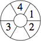
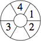

| 1-4: |  | 1-5: | 
|
| 1-6: | 
|
| 1-7: |
| 1-8: |
The solutions are here.
In each wheel below, put the first few digits in some of the sectors. Each digit should be used exactly once, and at most one digit can be in a sector. Moving n sectors either clockwise or counter-clockwise from the sector containing the digit n should get you to a sector with a different digit. The first puzzle below is solved as an example. Can you get rolling on the rest of them?
1-4:

1-5:
1-6:
1-7:
1-8:
The solutions are here.